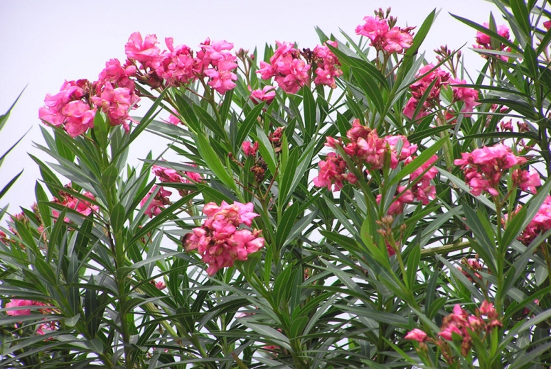

Trúc Đào

Thông Tin Loài Hoa
- Màu sắc: nhiều màu sắc như trắng, hồng nhạt, hồng đậm hoặc hơi đỏ cam, đỏ tía, hoa đơn
hoặc
hoa kép
- Hình dáng: hoa trúc đào mọc thành chùm màu hồng hoặc vàng bắt mắt
- Tên gọi khác: không có
- Nguồn gốc: loài hoa rất đẹp xuất hiện nhiều tại Tây nam nước Mỹ và bang California
- Độc dược: trúc đào còn được mệnh danh là "vua của hoa độc", bởi từng milimet của loài
cây
này đều chứa độc và được nghiên cứu là loài cây có độc tính mạnh nhất thế giới. Chỉ cần ăn nhầm một
chiếc lá Trúc đào cũng có thể gây chết người